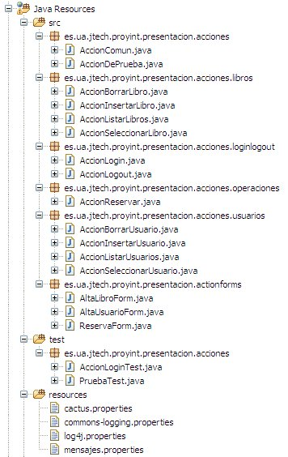
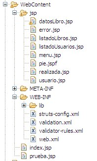

Aplicación web con Struts
Introducción
En esta sesión de integración no vamos a implementar funcionalidades nuevas, vamos a refactorizar la aplicación web usando Struts. Cambiaremos por tanto a una arquitectura MVC, que ya se ha ido preparando gradualmente en los dos proyectos anteriores.
Conversión del proyecto para uso de Struts
Antes de empezar a refactorizar el código, hay que importar las librerías de Struts y crear los ficheros de configuración. Seguir estos pasos:
-
Copiad a la carpeta WEB-INF/lib los .jar necesarios:
- Jars para Struts 1.2 comprimidos en .zip. Son los incluidos en la distribución estándar de Struts más la librería struts-el, por si queréis usar el lenguaje de expresiones en las etiquetas de Struts. Commons-logging no se incluye porque ya lo tenéis en el proyecto, aunque es necesario para poder usar Struts.
- Jars para StrutsTestCase comprimidos en .zip. Muchos no se incluyen aquí porque ya los tenéis en el proyecto web o bien en el común (como el servlet.jar). Consultad la documentación de StrutsTestCase sobre las librerías necesarias si en otro momento necesitáis hacer otro proyecto distinto.
- Cread el struts-config.xml. Os valdrá por ejemplo el que habéis usado en los ejercicios de Struts, eliminando los <action> y <form-bean> (ActionForms) que hayáis creado en los ejercicios.
- Modificad el web.xml para usar el servlet de Struts. Los <servlet> y <servlet-mapping> que tiene actualmente el web.xml del proyecto de integración ya no son necesarios. Podéis eliminarlos o mejor dejarlos comentados. Ahora todas las peticiones acabadas en .do deben llegar al servlet de Struts. Por ello necesitáis añadir un <servlet>. y un <servlet-mapping> para hacer el mapeo. Podéis copiarlo del web.xml que usábais en los ejercicios de Struts
- Cread un fichero mensajes.properties por el momento vacío en la carpeta "resources". Tened en cuenta que este fichero se referencia dentro del struts-config.xml. Comprobad que está bien referenciado por la etiqueta <message-resources parameter="mensajes"/>.
-
Para que funcione correctamente Cactus, que es la capa por debajo de StrutsTestCase
- Copiar el fichero cactus.properties a la carpeta "resources". Contiene información sobre la URL a la que hay que acceder para hacer las pruebas. Cactus incorpora un servlet que recibe las peticiones de pruebas, ejecuta la aplicación web y devuelve los resultados.
- Incluir en el web.xml de la aplicación las etiquetas para que se inicialice el
servlet que recibe las peticiones de pruebas.
<!-- Cactus Servlet Redirector configuration --> <servlet> <servlet-name>ServletRedirector</servlet-name> <servlet-class>org.apache.cactus.server.ServletTestRedirector</servlet-class> </servlet> <!-- Cactus Servlet Redirector URL mapping --> <servlet-mapping> <servlet-name>ServletRedirector</servlet-name> <url-pattern>/ServletRedirector</url-pattern> </servlet-mapping>
-
Comprobad que Struts está funcionando correctamente (no estrictamente necesario, pero RECOMENDADO).
- Cread una clase llamada AccionDePrueba (aquí tenéis el código) en el paquete es.ua.jtech.proyint.presentacion.acciones
- Copiad la página prueba.jsp a la carpeta "WebContent"
- Cread el siguiente mapeo en el struts-config.xml
<action path="/prueba" type="es.ua.jtech.proyint.presentacion.acciones.AccionDePrueba"> <forward name="OK" path="/prueba.jsp"/> </action>
- Arrancad el servidor y acceded a http://localhost:8080/proyint/prueba.do
-
Comprobad que StrutsTestCase funciona correctamente (no estrictamente necesario, pero RECOMENDADO)
- Cread una clase llamada PruebaTest (aquí tenéis el código) en el paquete es.ua.jtech.proyint.presentacion.acciones, pero en la carpeta de fuentes "test"
- Ejecutad el test sobre la clase como si fuera de JUnit. Debería ser correcto.
Refactorización del código
Vamos a refactorizar el código de los servlets en acciones de Struts. Además introduciremos ActionForms y validación automática. Se recomienda hacer esto en varias pasadas,es decir, primero convertir un servlet (o parte de él) en una acción y una vez estemos seguros de que funciona introducir el ActionForm y las etiquetas de Struts. Hacerlo todo a la vez incrementa mucho la posibilidad de cometer errores.
Veremos cómo hacer esto para el caso del login en la aplicación. El resto debéis hacerlo por vuestra cuenta.
-
Introducir acciones de Struts
-
Crear la clase de prueba Hacer esto lo primero sería lo recomendado en una metodología de
desarrollo dirigida por las pruebas. Aunque habría que probar más casos, por brevedad vamos a poner
aquí solo el test para login correcto:
package es.ua.jtech.proyint.presentacion.acciones; import servletunit.struts.CactusStrutsTestCase; public class AccionLoginTest extends CactusStrutsTestCase { public void testLoginOK() { setRequestPathInfo("/accionLogin"); addRequestParameter("login", "otto"); addRequestParameter("password", "colomina"); actionPerform(); verifyForward("OK"); } } -
Convertir un servlet en una o varias acciones. Algunos servlets, como LoginServlet,
darán lugar a una sola acción, mientras que otros,como LibroServlet darán lugar
a varias (en el caso comentado a cuatro: para borrar, insertar, seleccionar y listar libros).
Se recomienda colocar las acciones en cuatro packages distintos
es.ua.jtech.proyint.servlet.accion.xxx, donde xxx será libro,
loginlogout, operacion y usuario. Habrá que
cambiar los doForward que ahora tenéis en el código por mapping.findForward de Struts.
Aquí tenemos el código original, de la clase LoginServlet. Nos interesa la parte en negrita:
public class LoginServlet extends javax.servlet.http.HttpServlet implements javax.servlet.Servlet { private static final long serialVersionUID = -1859584491132060195L; private static Log logger = LogFactory.getLog(LoginServlet.class.getName()); public LoginServlet() { super(); } protected void doGet(HttpServletRequest request, HttpServletResponse response) throws ServletException, IOException { String login = request.getParameter("login"); String password = request.getParameter("password"); HttpSession sesion = request.getSession(); FactoriaDAOs fd = FactoriaDAOs.getInstance(); IUsuarioDAO iu = fd.getUsuarioDAO(); try { UsuarioTO usuario = iu.selectUsuario(login, password); if(usuario!=null) { sesion.setAttribute("usuario", usuario); doForward(request, response, "/jsp/menu.jsp"); } else { request.setAttribute("error", "El login y/o password no son correctos"); doForward(request, response, "/index.jsp"); } } catch (Exception e) { logger.error("Login - " + request.getParameter("login") + " - Error haciendo login"); request.setAttribute("error", "Error al hacer login"); doForward(request, response, "/index.jsp"); } } //Continúa,pero el resto no nos interesa...Podemos reutilizar el código casi tal cual, simplemente cambiando los doForward que apuntan a JSP por return mapping.findForward que devuelvan nombres simbólicos (como "OK", "error", "BadLogin",...). Los nombres de los JSP saldrán en el struts-config.xml
//No ponemos los import para ahorrar espacio public class AccionLogin extends Action { private static Log logger = LogFactory.getLog(LoginServlet.class.getName()); @Override public ActionForward execute(ActionMapping mapping, ActionForm form, HttpServletRequest request, HttpServletResponse res) throws Exception { String login = request.getParameter("login"); String password = request.getParameter("password"); HttpSession sesion = request.getSession(); FactoriaDAOs fd = FactoriaDAOs.getInstance(); IUsuarioDAO iu = fd.getUsuarioDAO(); try { UsuarioTO usuario = iu.selectUsuario(login, password); if(usuario!=null) { sesion.setAttribute("usuario", usuario); return mapping.findForward("OK"); } else { request.setAttribute("error", "El login y/o password no son correctos"); return mapping.findForward("error"); } } catch (Exception e) { logger.error("Login - " + request.getParameter("login") + " - Error haciendo login"); request.setAttribute("error", "Error al hacer login"); return mapping.findForward("error"); } } } -
Realizar el mapeo entre la acción y la URL en el struts-config.xml. Siguiendo con el caso
del login, sería: (fijaos en que hemos cogido los nombres de los JSPs que aparecían
en los antiguos doForward del servlet).
<action path="/accionLogin" type="es.ua.jtech.proyint.presentacion.acciones.AccionLogin"> <forward name="OK" path="/jsp/menu.jsp"/> <forward name="error" path="/index.jsp"/> </action>
- Ejecutar la prueba con StrutsTestCase: si todo va bien y la prueba cubre todos los casos, ya sabemos que la acción funciona. Solo nos falta...
-
Cambiar la URL que disparaba el servlet para que ahora siga el formato *.do. Buscar el
formulario o enlace que llamaba al servlet y cambiar el atributo action
o href, respectivamente.
En el caso de la acción de login, el formulario está en index.jsp. Cambiamos el action para que apunte a accionLogin.do
- Probar la acción con el interfaz web: en el navegador abrimos index.jsp y comprobamos que se puede entrar con login y password correctos. Si lo has conseguido... ¡Enhorabuena! (en estos casos se suele levantar el puño derecho instintivamente en señal de triunfo).
-
Crear la clase de prueba Hacer esto lo primero sería lo recomendado en una metodología de
desarrollo dirigida por las pruebas. Aunque habría que probar más casos, por brevedad vamos a poner
aquí solo el test para login correcto:
- Gestionar los errores con ActionMessages de Struts. Donde ahora en vuestro código se guardan los errores como atributos de la petición (con request.setAttribute("error", "mensaje_de_error")) hay que pasar a usar ActionMessages. Para poder mostrar los errores en los JSP, usar la etiqueta <html:messages> de la taglib HTML de Struts, en lugar de mostrar el valor de la variable error con ámbito en la petición, como hacéis ahora.
-
Introducir ActionForms
- Crear la clase Java del ActionForm (por ejemplo es.ua.jtech.proyint.presentacion.actionforms.LoginForm). Si hace falta validar datos (fechas, números, campos requeridos, etc). Se recomienda que uséis el plugin validator y por tanto heredéis de ValidatorForm. En caso contrario podéis heredar de ActionForm.
- Poner el nombre simbólico del ActionForm y el nombre completo de la clase asociada en la sección <form-beans> del struts-config.xml.
- También en el struts-config.xml, asociar el ActionForm con la acción a través de los atributos "name", "validate" e "input".
- Cambiar los request.getParameter por sentencias que saquen los datos del ActionForm. En el caso del login sería
algo como
public class AccionLogin extends Action { private static Log logger = LogFactory.getLog(LoginServlet.class.getName()); @Override public ActionForward execute(ActionMapping mapping, ActionForm form, HttpServletRequest request, HttpServletResponse res) throws Exception { ... LoginForm lf = (LoginForm)form; String login = lf.getLogin(); String password = lf.getPassword(); ...
- Introducir la validación automática usando validator en los formularios que la requieran
- Introducir las etiquetas de la taglib HTML de Struts
"Pistas" de implementación
Aunque la refactorización es bastante directa,el paso de servlets a acciones de Struts exigirá hacer algunos cambios. A continuación algunas "pistas" sobre cómo hacerlos
- Se recomienda crear una clase es.ua.jtech.proyint.presentacion.acciones.AccionComun en la que se define la variable logger y el método compruebaPermisos, ambos usados por el resto de acciones, que heredarán de AccionComun
- En general un solo servlet dará lugar a varias acciones. El parámetro "accion" que el servlet usaba para distinguir la operación a efectuar es ahora redundante y habrá que eliminar las apariciones tanto en el código Java como en los formularios de los JSP.
- Algunos servlets usan un método generaPagina para producir páginas de error o de resultado de una operación "sobre la marcha". Esto en Struts no es lo adecuado, es mejor saltar desde la acción a una página ya creada. Por tanto, todas las referencias a este método deben desaparecer y se sustituirán por saltos a JSPs ya creados (la página error.jsp o una nueva página realizada.jsp).
- En el formulario de reserva de libro, no tiene mucho sentido que se pueda y deba meter login y password de usuario. Cambiar el código para que tome estos datos de los que hay en la sesión, y el JSP para que no aparezca en el formulario.
Entrega
|  |
Aclaraciones:
|
|  |
Aclaraciones:
|